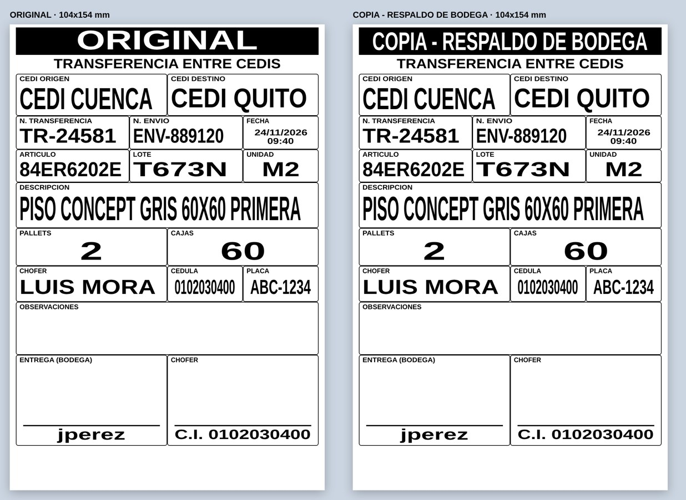

| Tipo de documento | Propuesta, evaluación y documentación del proyecto |
| Fecha | 24 de noviembre de 2026 |
| Estado de la aplicación | En producción versión publicada @46 |
| Tecnología | Google Apps Script, Google Sheets, Google Drive, HTML/JavaScript, impresora térmica (EPL / ZPL) |
| Herramientas de desarrollo | Asistente de IA (Claude Code), clasp, GitHub |
El proyecto aplica lo aprendido en el curso a un problema diario del área de despachos: preparar el packing list de cada envío y rotular la carga con etiquetas claras y consistentes. La solución es una aplicación web propia, construida con Google Apps Script sobre Google Sheets, que cualquier operador abre desde el navegador de la PC o del celular sin necesitar una cuenta de Google.
La aplicación ya está en producción. En este ciclo se evaluó a fondo, se documentó y se agregaron mejoras concretas pedidas por la operación, como la guía de transferencia entre CEDIs que imprime original y copia con un solo clic.
Antes de la aplicación, el despacho dependía de hojas de cálculo editadas a mano y de etiquetas armadas una por una. Esto generaba:
Objetivo general: digitalizar la preparación del despacho, desde la carga del archivo hasta la etiqueta impresa, con datos confiables y trazables.
La aplicación reúne en un solo lugar las tareas del despacho. Cada pantalla corresponde a un paso del trabajo diario:
| Pantalla | Qué permite hacer |
|---|---|
| Subir archivo | Cargar el archivo de alistamiento y la hoja de andenes. Valida los datos antes de guardar; cada carga se suma al historial y una línea repetida se actualiza conservando su etiqueta y su confirmación. |
| Datos | Tabla de despacho con filtros (hoy, 7 días, 30 días). Confirmar líneas una por una o en bloque, editar la etiqueta, completar cliente, andén y hora de carga. |
| Etiquetas | Vista agrupada por etiqueta, asignación automática a las líneas pendientes, vista previa e impresión. Genera también tickets en hoja A4. |
| Etiquetas de producto | Etiqueta por código con descripción, lote y cantidad, usando las conversiones (m² por caja, cajas por pallet) de la hoja base. |
| Diseñador | Plantillas libres con textos, recuadros, códigos de barras (Code128, EAN-13, Code39) y QR; campos variables; importación de formatos ZPL o EPL; juego de copias (ej. ORIGINAL + COPIA). |
| Historial | Cargas de archivos, etiquetas generadas y los últimos 300 movimientos con usuario y fecha. |
| Trabajos guardados | Cola de impresión: si la impresora no está conectada, el trabajo queda guardado y se imprime después desde la PC de la bodega. |
| Usuarios | Altas, roles (administrador u operador), cambio de clave y bloqueo por intentos fallidos. |
La hoja de cálculo sigue siendo la base de datos, pero nadie la edita a mano: la aplicación es la puerta de entrada. Todas las funciones del servidor pasan por un único punto de control de seguridad.
La operación pidió un respaldo para los productos que se envían a otro centro de distribución: una etiqueta original y una copia que firma el chofer. Se resolvió con una plantilla de casillas de 10,4 × 15,4 cm y un juego de copias: los datos se escriben una sola vez y la impresora saca primero la ORIGINAL y luego la COPIA.

| Control | Cómo está implementado |
|---|---|
| Acceso | Usuarios individuales con rol. Las 38 funciones del servidor exigen sesión válida; 7 son solo para administrador (plantillas, importación, limpieza, claves). |
| Contraseñas | Cifradas con PBKDF2-HMAC-SHA256, 80 000 iteraciones y sal por usuario; mínimo 10 caracteres. Se guardan fuera de la hoja. |
| Sesiones | Vencen tras 6 horas sin uso. Cambiar la clave o desactivar un usuario cierra sus sesiones. |
| Intentos fallidos | Bloqueo de 15 minutos después de 5 intentos. |
| Datos de entrada | Se limpian antes de procesarse (no se aceptan etiquetas HTML). |
| Escrituras simultáneas | 24 puntos de escritura protegidos con bloqueo (LockService) para que dos usuarios no se pisen. |
| Respaldo | La limpieza de datos antiguos copia primero a Drive, verifica la copia y recién entonces borra. La numeración de etiquetas nunca se repite. |
| Rendimiento | Caché del catálogo con control de versión y carga por defecto de los últimos 7 días. |
| Cambios | Versión de prueba separada de producción, código en GitHub y vuelta a la versión anterior en un minuto. |
La evaluación revisó el código completo (9 archivos, unas 8 600 líneas propias más una librería de QR), la seguridad, el rendimiento y la facilidad de mantenimiento.
| Hallazgo | Recomendación | Prioridad |
|---|---|---|
| Un texto que empiece con «=» puede quedar como fórmula en la hoja | Guardar esos valores como texto al escribir en Sheets | Media |
| Archivos muy grandes (servidor de 2 900 líneas y pantalla de 4 100) | Separar por módulo (carga, etiquetas, diseñador) para mantener más fácil | Media |
| No hay pruebas automáticas dentro del proyecto | Guardar en el repositorio las pruebas usadas en esta evaluación y correrlas antes de publicar | Media |
| Dependencia de un solo modelo de impresora (EPL) | Mantener la versión ZPL de las plantillas clave para otras impresoras | Baja |
| Sin indicadores de uso a la vista | Agregar un resumen mensual a partir del historial | Baja |
| Aprendizaje | Cómo se aplicó |
|---|---|
| Usar la IA como asistente para analizar y construir | El asistente revisó el código, propuso opciones de diseño y escribió los cambios; yo validé cada decisión contra la operación real. |
| Dar contexto e instrucciones claras | Las etiquetas se pidieron con su uso real (original y copia, firma del chofer, datos de distinto largo) y el diseño se ajustó a eso. |
| Iterar con retroalimentación | La guía de transferencia pasó por 4 versiones hasta quedar como la necesita la bodega. |
| Verificar antes de confiar | Cada cambio se probó con datos de ejemplo y con el motor real de la app antes de publicarlo; los errores encontrados se corrigieron. |
| Trabajar de forma ordenada y segura | Versión de prueba separada, publicación con aprobación, código y cambios registrados en GitHub, trabajo remoto desde el celular. |
El impacto se medirá comparando el mes anterior y el posterior al uso completo de la app; la línea base se toma en la primera semana.
| Indicador | Fuente | Meta |
|---|---|---|
| Tiempo para preparar el packing list de un envío | Cronometrado en 10 envíos | Reducir frente a la línea base |
| Etiquetas con número repetido o líneas sin etiqueta | Historial de etiquetas | 0 |
| Líneas confirmadas antes de la carga | Pantalla Datos | 100 % |
| Transferencias entre CEDIs con copia firmada | Plantilla de transferencia | 100 % |
| Trabajos de impresión perdidos | Cola de impresión | 0 |
| Hoja | Contenido |
|---|---|
DATOS | Líneas del despacho con su confirmación y etiqueta |
base | Catálogo de productos y conversiones (m² por caja, cajas por pallet) |
ANDENES | Cliente, hora de carga y andén por número de envío |
CARGAS | Registro de cada archivo cargado |
HISTORIAL | Actividad de los usuarios |
HISTORIAL_ETIQUETAS | Cada etiqueta generada o impresa |
COLA_IMPRESION | Trabajos guardados para imprimir después |
PLANTILLAS | Diseños de etiquetas del diseñador |
STOCK | Existencias consultadas desde la app |
TUTORIAL | Guía de uso dentro de la app |